技术文章写不下去？用 Unvar 把一次验证整理成稿
准备写一篇 AI 工具体验，资料收了不少，聊天记录也翻了几遍。可写到“它到底帮我解决了什么”时，又停住了。
当时为什么选这个工具？中间改了几次？觉得省了时间，有没有把检查和返工算进去？这些细节如果没留下，写文章时就得重新找，甚至重新做一遍。
如果你是开发者，或者经常试工具、写技术文章，这篇指南就从这个卡点开始。我们用 Unvar（未命名变量）走一遍完整流程，把一条想法整理成有来源、有实验记录、也有自己判断的文章。
Unvar 是一个开源桌面研究与写作工作台。你负责实际验证和最后的判断，模型可以辅助分析材料、提出问题，再根据你确认的内容生成提纲与正文。研究内容放在本地工作区，模型服务由你选择。
这次只追一个问题：把审阅和返工算进去，AI 辅助编程还省时间吗？
跟着做完，你会得到一条研究笔记、一份实验记录，以及关联证据的文章 Markdown。整条路径是“记录 → 问题 → 实验 → 结论 → 写作 → 导出”。文章最后也附了备份方法和常见卡点，第一次用不需要先弄懂所有可选功能。
文中截图来自 Unvar 的独立演示工作区。问题评分与实验数字，以及研究结论和文章内容，均为预置演示数据，用于说明操作，不代表实测结果，也不代表模型真实调用效果。截图中的模型服务未连接；实际分析与生成需要你配置可用服务。
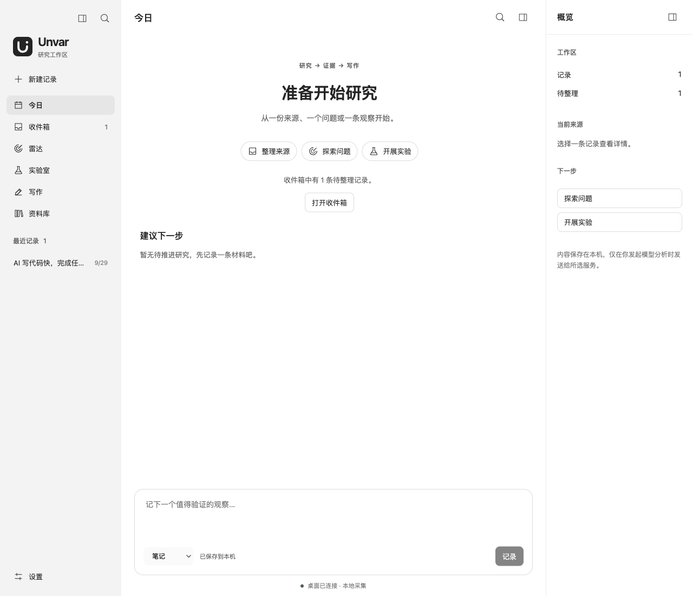
图 1：从「今日」开始，左侧可以进入收件箱与雷达，也可以打开实验室、写作和资料库。
先打开应用，跟着做一个小问题
项目地址是 github.com/xiongbuer-ai/Unvar。先查看仓库的 Releases 页面是否有适合你设备的安装包。macOS 的 Apple Silicon 选择 arm64，Intel 选择 x64；Windows 选择 x64 安装包。macOS 下载 DMG 后，将应用拖入 Applications；Windows 运行安装程序，按向导选择安装目录。
仓库已经配置这些平台的安装包构建，但是否能直接下载，要看实际发布的附件。当前构建未启用签名或 macOS 公证，系统可能提示无法验证发布者。先核对下载来源；不要为了运行来源不明的文件而关闭系统安全保护。
没有对应安装包，也可以从源码启动。准备 Node.js 24.12.0 或更新的 24.x 版本，以及 pnpm 11.0.9，在终端运行：
git clone https://github.com/xiongbuer-ai/Unvar.git
cd Unvar
pnpm install --frozen-lockfile
pnpm dev首次安装会下载依赖和 Electron。数据库原生依赖没有可用的预编译包时，还需要本机编译工具链。后续也可以运行 pnpm build 构建，再用 pnpm start 打开。
打开后默认进入「今日」。如果界面是英文，点击左下角 Settings，选择「简体中文」。切换语言只改变界面，已有笔记的语言不会变化。
给这次研究留一个固定位置
点击左下角「设置」，再点「打开设置」。在「工作区文件夹」可以看到当前保存路径，点击「在文件管理器中打开」查看内容。
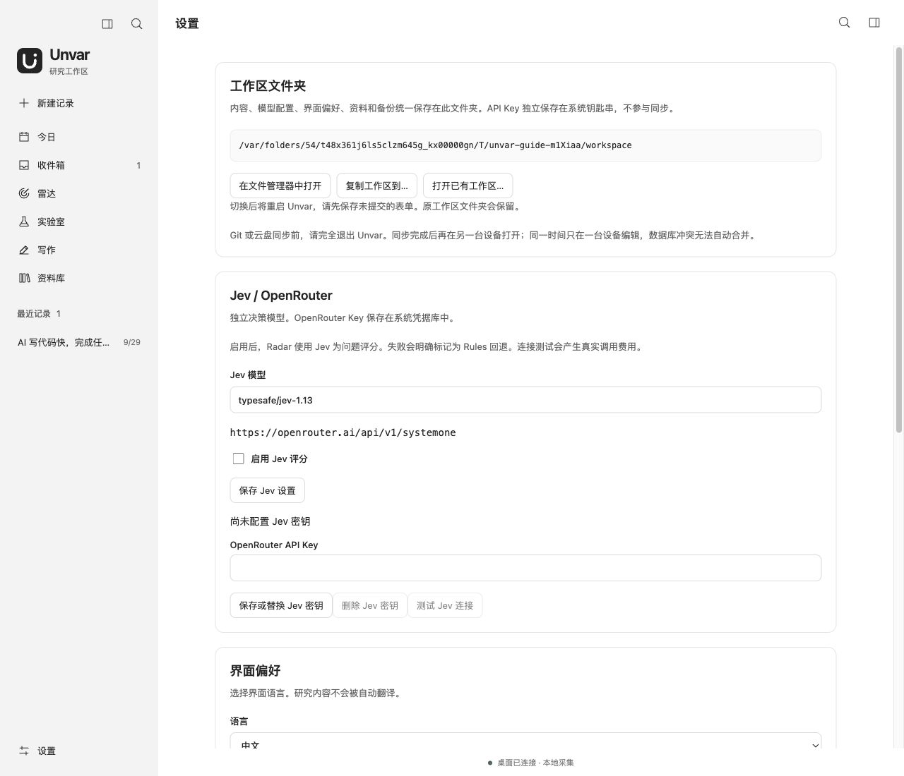
图 2：工作区保存研究内容与配置，API Key 单独保存在当前设备的系统凭据库。
第一次使用可以保留默认目录。想换位置，点击「复制工作区到…」，选择一个独立的空文件夹。复制完成后，应用会切换工作区并重启；原目录仍保留。已有备份则使用「打开已有工作区…」。两个工作区不会自动合并。
在同一个设置页找到「研究背景」，填写你的研究方向并保存。例如：
研究 AI 辅助编程的实际成本，关注审阅、修改和返工时间。
雷达会参考这段内容评估问题的相关性。没有填写研究方向时，相关性评分为 0，问题进入待评估列表，仍可由你人工判断。
配置用于分析和写作的模型
找到「模型服务」，点击「新增服务」。选择接口类型，填写显示名称、接口地址和模型标识，勾选启用，点击「保存服务」。目前界面支持 OpenAI 兼容接口、Anthropic 和 DeepSeek。
接口地址与模型标识请直接使用服务商提供的值。显示名称只是方便你区分服务，可以写“我的写作模型”。保存服务后，下方才会出现密钥输入区。
输入 API Key，点击「保存密钥」，再点击「测试连接」。测试会发送一条小型请求，可能消耗服务额度。密钥保存后不回显；换电脑时需要重新填写。
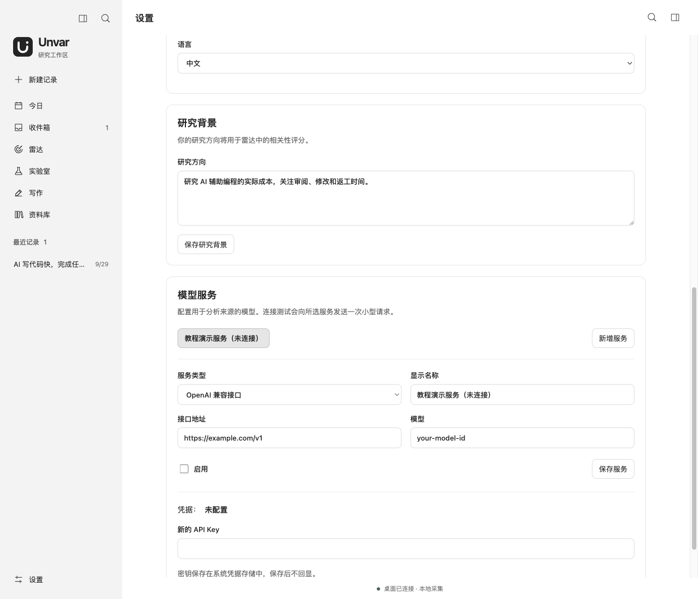
图 3：截图中的地址和模型名是占位示例，不能用于真实请求；请换成自己的服务配置。
只想先记笔记，可以暂时跳过模型配置。保存记录和本地检索不需要密钥；雷达分析、生成候选结论和文章生成需要可用模型。执行这些操作时，相关材料会发送给你选择的服务。
从一句“我想弄清楚”开始
先把问题记下来，不必等到选题成熟。这个例子关注的是“完成一个任务花了多久”，后面选实验方法和写结论都围绕它展开。
回到「今日」或进入「收件箱」，在底部快速记录。想同时填写标题和标签，点击「新建记录」，类型选「笔记」，输入下面的内容后保存。
标题：AI 写代码快，完成任务也更快吗？
准备选取两个难度接近的小任务，分别手动完成和使用 AI 辅助。从读需求开始计时，到测试通过结束；单独记录审阅和返工时间。
标签可以写“AI 编程”和“效率实验”。保存后，你会在收件箱看到这条记录，可以继续编辑，也可以归档后再恢复。
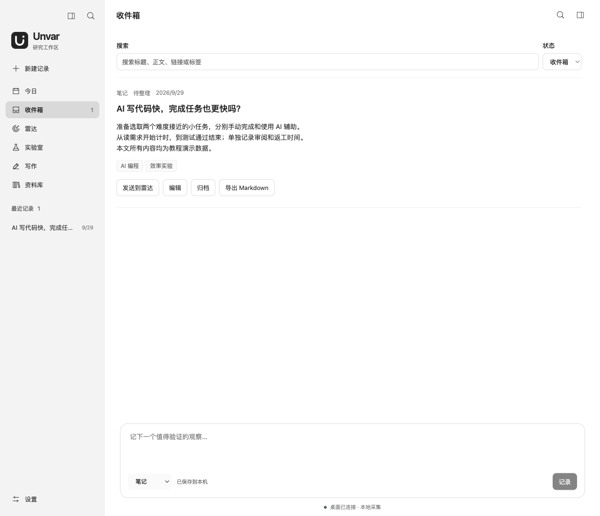
图 4：先把要验证的想法记下来，后续实验可以沿着这条来源继续。
如果线索来自网页，使用「链接」类型并填写网址。网页采集读取 HTML 或纯文本，不执行网页脚本，也不会带上你的登录状态。遇到登录页或无法提取正文的页面，手动摘录相关段落为笔记即可。
在雷达里把想法改成可验证的问题
在记录上点击「发送到雷达」，选择来源和已配置的模型服务，再点「分析来源」。等待分析结束后，查看模型提取的主张与候选问题。
看到候选问题后，先问自己：这个问题能通过一次具体操作得到答案吗？
“AI 编程好不好用”很难直接验证。把它收窄成“计入审阅与返工后，AI 辅助是否节省时间”，就知道该比较什么、记录什么。后面写文章，也能把自己的结论限定在实际观察过的范围里。
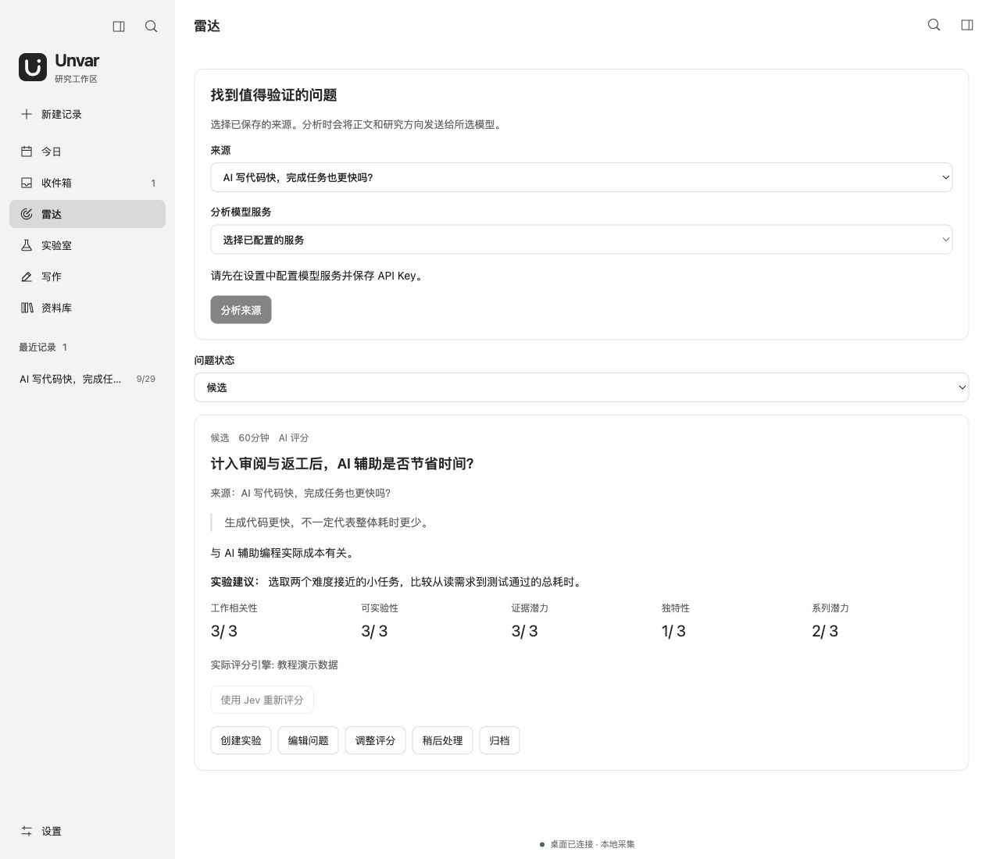
图 5：评分用于辅助选题。先读问题和实验建议，再决定是否继续。
雷达从工作相关性、可实验性、证据潜力、独特性和系列潜力五个维度评分。你可以修改问题或调整评分；修改时填写原因，便于以后回看自己的判断。
挑中要做的问题，点击「创建实验」。它会进入实验室，最初处于“想法”状态。
先写预测，再动手验证
结果出来以后，很容易觉得自己早就知道。提前留下预测，回头才能看清，哪些判断被证实了，哪些需要改。
进入「实验室 → 实验」，选中刚创建的实验。先填写预测、基线、方法和指标四项，再保存。可以照着下面的方式安排自己的测试。
- 预测：预计 AI 辅助能缩短总耗时，但审阅和返工会抵消部分收益。
- 基线：手动完成一个同类小任务，从读需求到测试通过计时。
- 方法：使用两个难度接近的小任务，统一验收标准，分别记录各阶段耗时。
- 指标：总耗时、审阅分钟数、返工次数和测试结果。
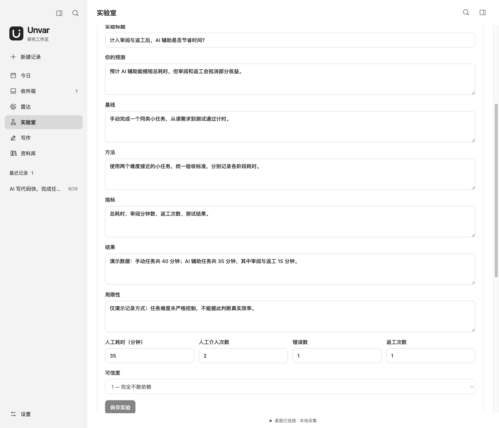
图 6：截图展示已完成的演示实验。实际操作时，先填写这四项，再推进状态。首次开始后，预测会锁定。
实验按“想法 → 就绪 → 进行中 → 分析中 → 已完成”推进。开始前四项都要填好；首次开始后预测不能再改，所以请把事前判断写清楚。更新状态或操作计时器之前，先保存正在编辑的内容。
实验过程中，用计时器记录投入时间；中途暂停，回来再继续。观察日志适合记录发生了什么，例如“生成的实现漏掉了空输入处理，补测试后返工一次”。这些记录以后可以直接用于核对结论。
做完后，填写实际结果与局限，并记录人工耗时、介入次数、错误和返工情况，评估可信度，再进入分析并完成实验。
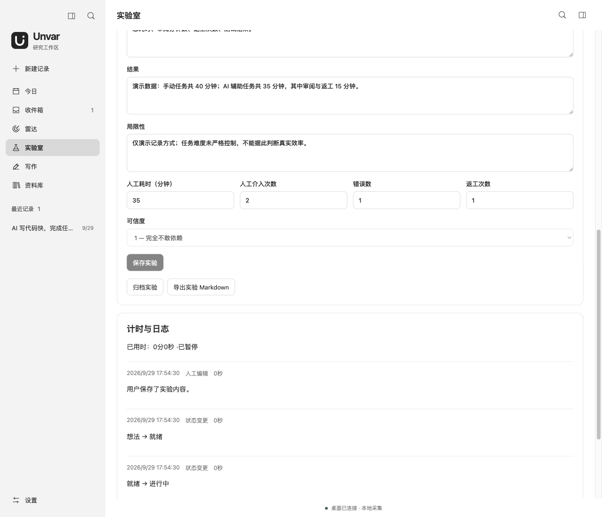
图 7：演示结果中，手动任务为 40 分钟，AI 辅助任务为 35 分钟，其中审阅与返工占 15 分钟。这些数字仅用于展示记录方式。
这组演示数字里，AI 辅助任务的总耗时少了 5 分钟，但检查和返工仍花了 15 分钟。沿着记录往下看，文章就有了具体问题：时间省在了哪里，又花在了哪里？
两个任务的难度可能不同，完成顺序也可能影响表现。这组演示数据不能证明 AI 普遍更快。真实使用时，请换成自己的记录，并写清测试条件与限制。读者需要这些信息，才能判断你的经验是否适合自己的任务。
结论写到证据能支持的地方
切换到「实验室 → 研究结论」，选择已完成实验和模型，点击生成候选结论。模型生成后，先读结论，再检查关联的原始实验。
核对可信程度与反证、局限是否合适。证据关系可以选择支持、反驳或背景。需要修改时，先保存修改，再填写自己的审阅理由，最后点击「确认结论」或「拒绝结论」。确认前至少要关联一个已完成实验。
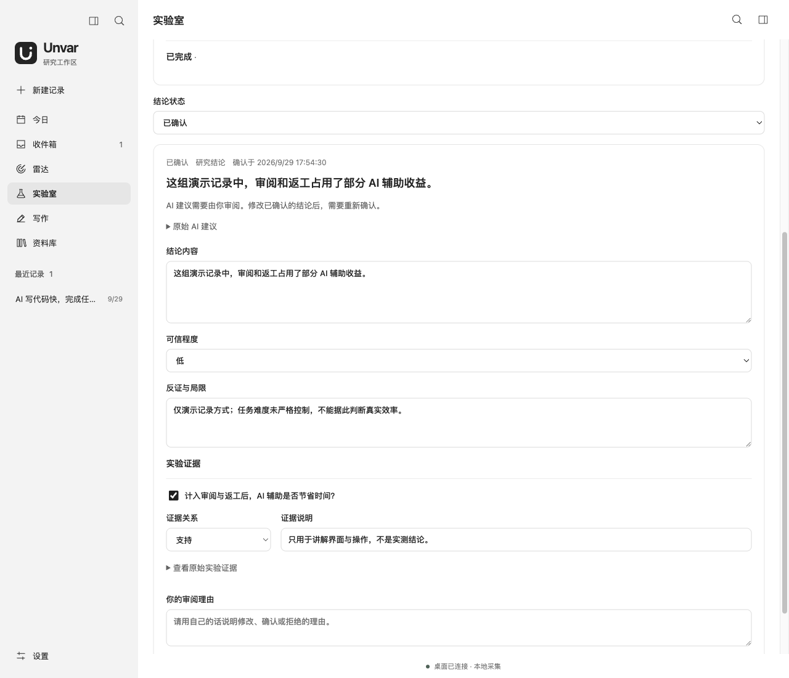
图 8：这里展示的是已确认演示结论，可通过「结论状态」切换查看。
我们保留的演示结论是“这组演示记录中，审阅和返工占用了部分 AI 辅助收益”。它的范围只到这组记录。
你可能会问：只做一次，值得写吗？一次记录可以用来讲清操作过程，也可以暴露下一次需要验证的问题。只要交代范围和局限，读者就能知道哪些可以参考，哪些还没有答案。
确认以后再修改结论，确认状态会失效，需要重新审阅。保存修改和确认是两个操作，不要漏掉后一步。
把你的判断写进去，文章才有作者
进入「写作」，展开「新建文章」，填写标题，选择已完成实验或已确认结论作为来源，再点击「创建文章」。这次可以用“AI 辅助编程，到底省下了哪部分时间？”作为标题。
走到这一步，实验里已经有了结果。但同样一组记录，不同的人可能注意到不同的事。你为什么在意返工？什么情况让你改变了原来的判断？这些回答决定文章要讨论什么。
写作从「作者采访」开始。填写自己的观察和经历，说明观点，把还不确定的事留在「尚未确定的问题」里，然后点击「保存采访」。
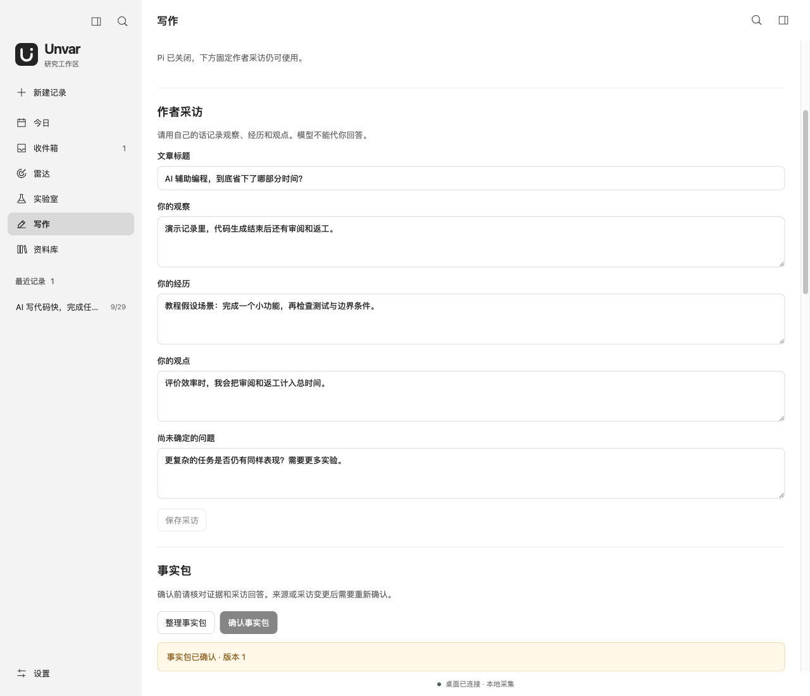
图 9：采访回答会进入事实包。请填写自己的经历，不要把示例场景当成真实经历。
如果你确实遇到了相应情况，可以写“生成结束后，我仍需要检查测试和边界条件”，再补充自己的看法“评价效率时，我会把审阅和返工计入总时间”。具体到哪个环节、为什么在意，都来自你的实际经历。没有做过的事就不要填成亲身经历。
页面上方的「Pi 证据采访」是可选功能。启用后，选择可用模型，点击「检索证据并追问」，Pi 会读取相关本地研究并提出问题。你填写回答后，点击「保存我的回答并整理事实包」，再单独核对和确认。第一次使用也可以保持关闭，直接完成固定采访。
核对事实包，再生成正文
点击「整理事实包」。这里会集中展示记录的事实与来源证据，以及你的观点与经历，同时保留局限和待解问题。
可以把事实包当成动笔前的一次材料核对。“耗时 35 分钟”是记录；“下次也会更快”是推测；“我愿意继续用”则是个人判断。这几句话在文章里各有位置，不能互相替代。
逐项检查，尤其注意观察和推测有没有混在一起。核对后点击「确认事实包」，再往下进入提纲与正文。
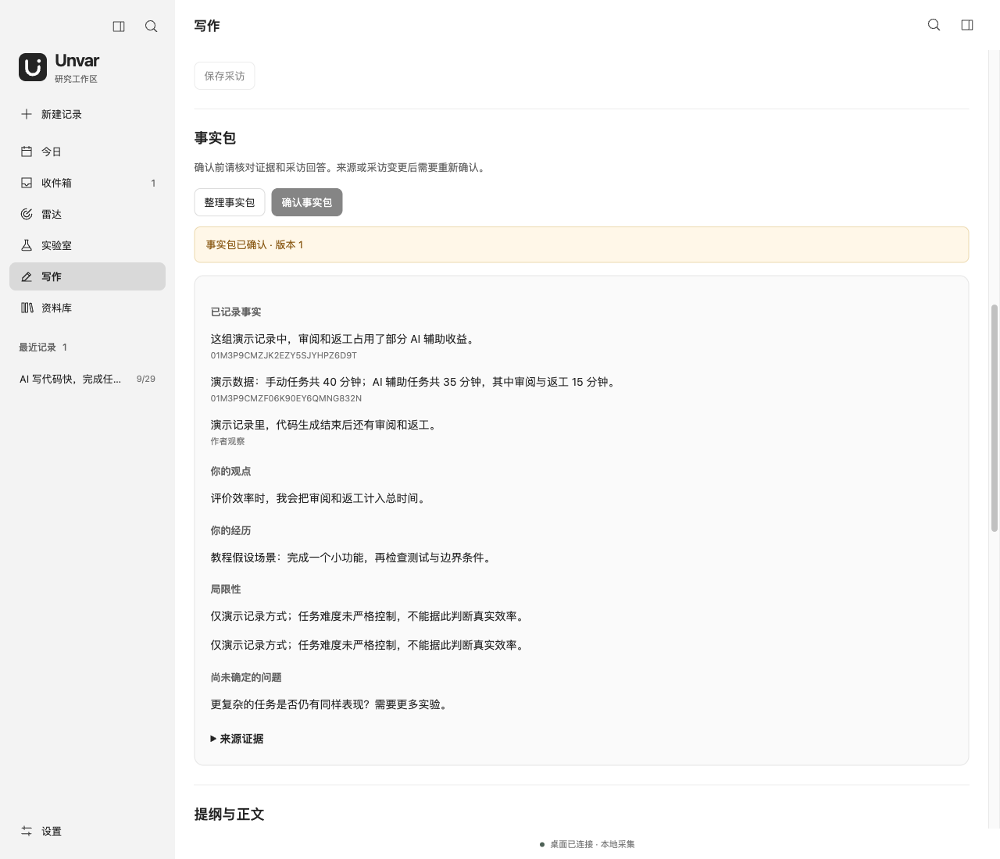
图 10：确认事实包后，生成步骤才会开放。来源或采访发生变化，需要重新整理并确认。
选择模型服务，点击「生成提纲」。先看文章有没有回答开头的问题。这个例子可以从“为什么记录总耗时”讲起，再写实验安排与观察结果，最后交代局限。需要修改就编辑提纲、填写理由并保存。
然后点击「生成正文」。读的时候检查：有没有把推测写成事实，或者出现自己没说过的经历？正文仍可编辑，改完填写编辑理由，点击「保存正文修改」。
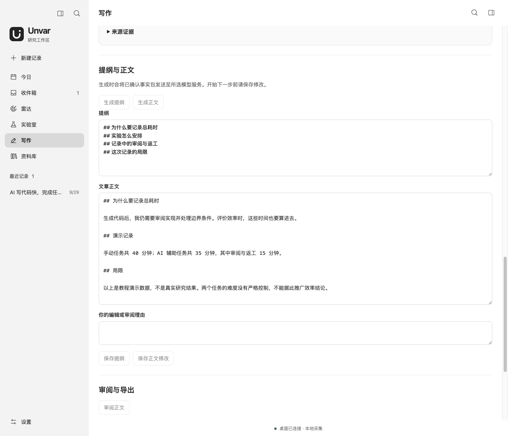
图 11：提纲与正文分别保存。修改提纲后，需要重新生成正文。
每次只保存一个部分。如果同时修改提纲与正文，界面会提醒你分开保存。来源或采访改了，也要重新核对事实包，避免文章继续引用旧版本材料。
审阅、导出，准备发布
点击「审阅正文」，逐项检查审阅意见。修改正文后，需要重新审阅当前版本。在「你的编辑或审阅理由」里说明判断，点击「确认就绪」，最后点击「导出文章 Markdown」，选择保存位置。
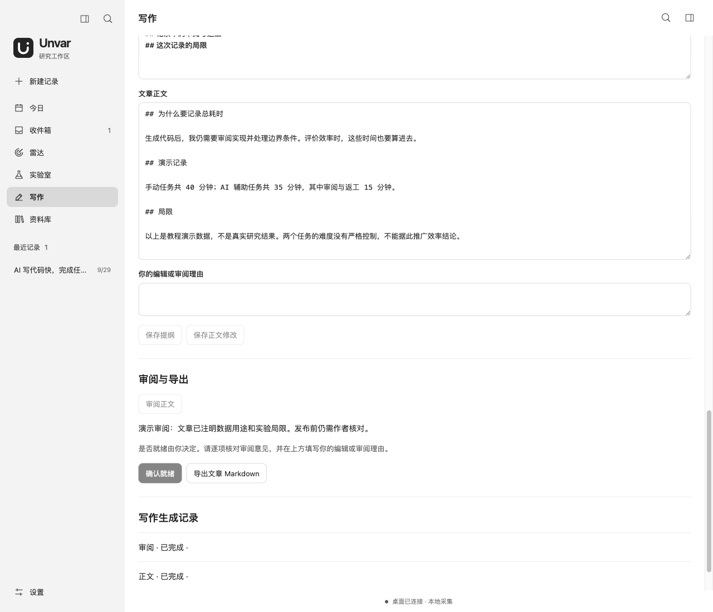
图 12：文章就绪后可以导出。导出文件包含正文与证据列表，也会附上局限和事实包版本。
Unvar 当前导出 Markdown，公众号排版与发布需要在应用外完成。把正文交给你平时使用的排版工具，按图注位置插入图片，再放进公众号草稿。预览时检查手机上的图片字号和段落间距，最后核对标题、署名与来源链接。
发布前，再从读者的角度读一遍：他能看懂你做了什么，找到结论的依据，知道哪些条件下可以参考吗？如果还有疑问，补充必要记录，或把结论的范围写得更明确。
回看判断，也给研究留一份备份
「资料库」可以检索已有材料。按 Cmd/Ctrl+K 会打开资料库并聚焦搜索。进入「决策记录」，可以对照模型建议和你当时的判断，查看理由，再补充后来观察到的结果。
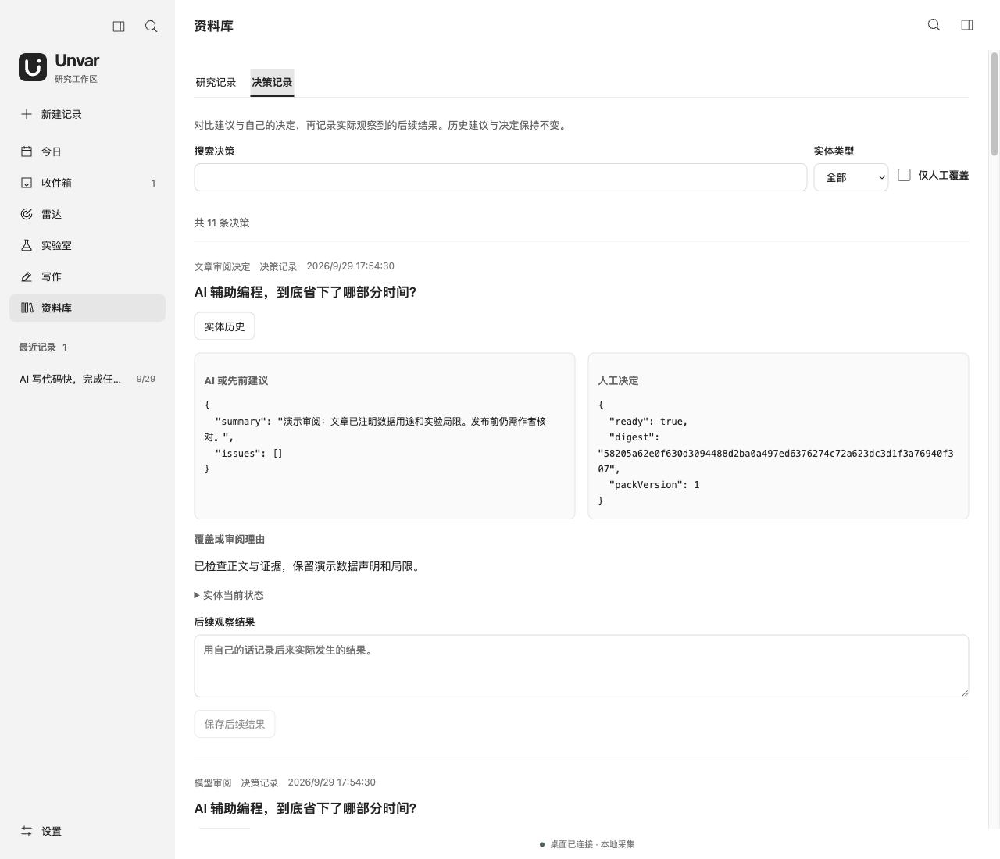
图 13：文章确认与人工判断都有记录，后续观察可以继续补充。
备份可使用设置中的「复制工作区到…」。这个操作也会切换当前工作区；备份后想继续用原目录，再打开原工作区即可。也可以完全退出应用后，复制整个工作区文件夹。
通过 Git 或云盘换设备时，先完全退出 Unvar，等同步完成，再在另一台设备打开。同一时间只在一台设备编辑。macOS 关闭窗口后应用仍可能运行，完全退出使用 Cmd+Q。不要在应用运行时只复制 unvar.db，也不要尝试把两台设备的数据库冲突当成文本合并。API Key 不随工作区同步，新设备需要重新配置。
卡住时先检查这些地方
- 模型下拉框没有服务：确认服务已启用，并已保存 API Key。
- 网页没有正文：登录页或脚本渲染页面可能无法提取，改为手动保存笔记。
- 实验无法开始：检查预测、基线、方法和指标是否都已填写并保存。
- 生成或导出按钮不可点：检查是否有未保存修改，事实包是否已确认，当前正文是否已审阅，文章是否已确认就绪。
- 模型调用失败：检查接口地址、模型标识、密钥、服务额度和网络，处理后手动重试。
想进一步调整问题评分，可以在设置的「Jev / OpenRouter」单独配置 OpenRouter Key 并启用 Jev。雷达支持重新评分和查看评分历史，调用失败会明确标记 Rules 回退。Jev 是可选项，不影响你先用普通模型走完研究与写作流程。
先留下一个能继续追问的问题
回到开头，“AI 辅助编程还省时间吗？”要回答它，需要知道时间花在哪些环节，也需要交代任务与验收条件。文章里的判断，就从这些记录中来。
Unvar 把记录与写作连在一起。下一次想复查结论，或者读者追问某个细节，你可以回到关联实验，找到当时的材料。尚未解决的问题，也能成为下一次验证的起点。
现在就选一个最近想弄清楚的小问题，在收件箱里写下它。 先保存第一条记录，再决定怎么验证。
你写技术文章时，最常卡在选题、验证，还是把经历写清楚？欢迎在评论区留下具体场景。
项目仓库：Unvar